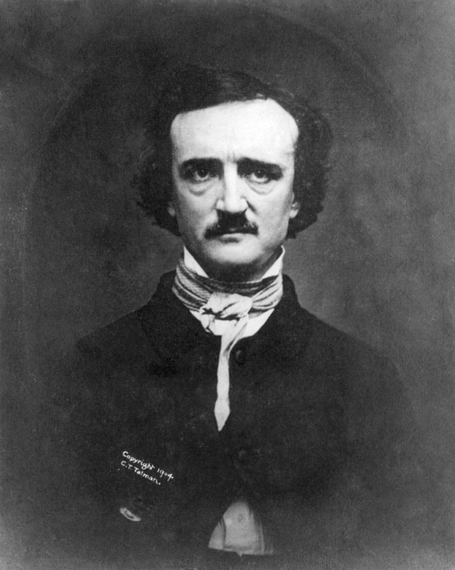
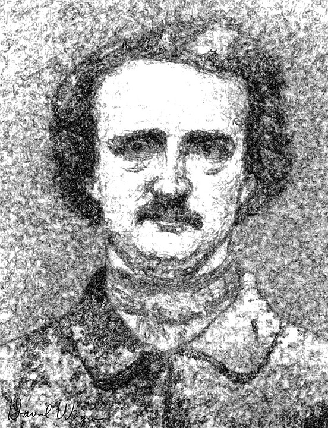

Edgar Allan Poe
“Los que sueñan de día son conscientes de muchas cosas que escapan a los que sueñan sólo de noche”.
Retrato, Edgar Allan PoeEl bisabuelo paterno de Poe, John Poe, emigró de Irlanda a Estados Unidos en el siglo xviii y se hizo granjero, casándose con una inglesa; ambos pretendían ser de ascendencia noble. Uno de sus diez hijos fue David Poe, quien a su vez se casó con una emigrante irlandesa, Elizabeth Cairnes. Vivían en Baltimore, Maryland; David Poe era carpintero y, al estallar la revolución contra los ingleses, llegó a prestar dinero al ejército.Por méritos, recibió el título honorífico de «general». David y Elizabeth tuvieron siete hijos. El mayor, David, fue el padre de Edgar; la segunda hija, María (más tarde María Clemm), fue la tía y suegra del poeta (madre de su mujer, Virginia). La abuela materna de Edgar, Elizabeth Arnold, fue cantante de ópera y actriz romántica y, con su hija, del mismo nombre, llegó emigrada de Londres, Inglaterra, a Estados Unidos en 1796. David Poe hijo, estudiante de Derecho, dejó esta carrera para convertirse en actor. En 1804 conoció a la bonita señorita Arnold —actriz de gran encanto y con un extenso repertorio: llegó a representar unos doscientos papeles—, que estaba casada a la sazón con un tal señor Hopkins, quien moriría poco después. David y Elizabeth se casaron seis meses más tarde y se instalaron en Boston, Massachusetts, donde nacieron sus dos primeros hijos.
Edgar Allan Poe nació el 19 de enero de 1809 en la ciudad de Boston, donde ya había nacido su hermano mayor, William Henry Leonard (1807). La hermana menor, Rosalie, vio la luz en Richmond, en 1810. Edgar pudo haber recibido dicho nombre por un personaje de William Shakespeare que aparece en la obra El rey Lear, que representaban los padres en 1809, año de su nacimiento. David Poe abandonó a su familia en 1810, y su mujer, Elizabeth, murió un año después de tuberculosis; tenía veinticuatro años. Lo único que conservó Edgar de sus padres biológicos fue un retrato de su madre y un dibujo del puerto de Boston. A su hermana Rosalie le correspondió un joyero vacío. El motivo por el cual Edgar y Rosalie fueron adoptados fue que, al morir su madre, los niños quedaron totalmente desamparados, en Richmond, mientras que los abuelos, que residían en Baltimore, se hacían cargo de William Henry, que ya vivía con ellos. En cualquier caso, Edgar fue acogido por una de las familias caritativas que habían cuidado de los niños al morir su madre: el matrimonio formado por Frances y John Allan, de Richmond (Virginia), mientras que Rosalie fue acogida por la familia Mackenzie. Los Allan y los Mackenzie eran vecinos y mantenían una estrecha amistad
Su padrastro, del cual Edgar tomaría el apellido, fue un acaudalado comerciante de ascendencia escocesa. Sus negocios incluían el tabaco, tejidos, tés y cafés, vinos y licores, grano, lápidas, caballos y aun el comercio de esclavos; hombre colérico e intransigente, desempeñó un papel destacado —negativamente hablando— en la vida del escritor. Por ejemplo, nunca demostró simpatía alguna por sus ambiciones literarias. Sus biógrafos hacen notar que John Allan tuvo varios hijos naturales fuera del matrimonio. Los Allan acogieron al niño, pero nunca lo adoptaron formalmente aunque le dieron el nombre de "Edgar Allan Poe". Su madrastra, que no había podido tener hijos, sentía verdadera devoción por el muchacho y lo quiso y mimó siempre, se cree que hasta el punto de malcriarlo con las otras mujeres de la casa, lo que trataron de evitar las intervenciones del padrastro.
En 1812, Edgar fue bautizado en la Iglesia episcopaliana. A los cinco años empieza sus estudios primarios, pero pronto, al año siguiente (1815), la familia Allan viajó a Inglaterra. El niño asistió a un colegio en Irvine, Escocia (el pueblo donde había nacido John Allan), durante un corto periodo, pero que fue suficiente para ponerlo en contacto con la cultura y el viejo folclore escoceses. Posteriormente la familia se trasladó a Londres (1816). Edgar estudió en un internado de Chelsea hasta el verano de 1817. Más tarde ingresó en el colegio del Reverendo John Bransby en Stoke Newington, que entonces era un suburbio al norte de la ciudad. Allí aprendió a hablar francés y a escribir en latín. De estas vivencias y de la contemplación de los paisajes y arquitecturas góticos de Gran Bretaña nacerían años después relatos como «William Wilson». Con todo, el recuerdo que conservaría Poe de su estancia en este país fue de tristeza y soledad, sentimientos compartidos por su madrastra. A este respecto, John Allan manifestó: «Frances se queja como de costumbre».
El escocés, considerablemente preocupado por sus desgraciados negocios londinenses, regresó con su familia a Richmond en 1820. De 1821 a 1825, Edgar asiste a los mejores colegios de la ciudad, recibiendo la esmerada educación sureña correspondiente a un caballero virginiano: el English Classical School, de John H. Clarke, y los colegios de William Burke y del Dr. Ray Thomas y su esposa, donde conoce a los clásicos: Ovidio, Virgilio, César, Homero, Horacio, Cicerón... Fuera de las horas de clase, ya desde pequeño gustaba de pasar el tiempo hojeando las revistas inglesas que encontraba en los almacenes de su padrastro; allí cautivaban además su imaginación las leyendas marineras que contaban los capitanes de veleros que se acercaban a Richmond. Algunas de estas leyendas inspirarían en su momento una de sus obras fundamentales: La narración de Arthur Gordon Pym. Según Van Wyck Brooks, Poe pudo escuchar asimismo historias sobre apariciones, cadáveres y cementerios en los barracones de los esclavos negros, cuando su mammy lo llevaba de visita a las plantaciones de la familia.
Su carácter se va fraguando en esos años. En 1823, a los catorce, ya había hecho sus primeros pinitos literarios, y se enamoró apasionadamente de la madre de un compañero de estudios, a la que dedicó el conocido poema «To Helen».Esta mujer, llamada Mrs. Stanard, era de una gran belleza y contaba a la sazón treinta años; murió meses más tarde. Fue su primer gran amor.55 A los quince años era pacífico, aunque no del todo sociable. Tuvo pocos conflictos con sus compañeros, pero se sabía que no toleraba ningún tipo de manipulación. También era aficionado a las mascaradas. Un día terminó moliendo a golpes a un compañero mucho más fuerte que él, después de haber recibido lo suyo, y esperar, según él mismo confesó, a que el otro estuviese agotado. También son muy conocidas sus dotes como deportista. A imitación de su gran héroe, Lord Byron, en cierta celebrada ocasión, un caluroso día de junio el joven emprendió una travesía a nado de ocho kilómetros por el río James, de Richmond; lo hizo a contracorriente. Cuando se dudó de su hazaña, buscó testigos presenciales que la corroborasen por escrito.
Con todo, recuerda Brooks, en dicha etapa era un muchacho nervioso e irritable, con un brillo de ansiedad y tristeza en sus ojos; empezó a tener frecuentes pesadillas, todo ello debido posiblemente a los problemas constitucionales familiares que ya se habían manifestado en su hermana Rosalie. «Esta compleja inseguridad —sigue Brooks—, de índole física, social, y posteriormente financiera, explicaría en gran medida la vida y el carácter de Poe, condicionando asimismo en gran parte todo su trabajo literario». Como forma de contrarrestar estas debilidades en años sucesivos buscaría con denuedo la supremacía en el campo periodístico, y literariamente siempre quiso ser considerado «un mago, por el sentimiento de poder que esto le proporcionaba».
En 1824 se empieza a gestar el desentendimiento entre él y su padre de adopción. En una carta dirigida por éste al hermano mayor de Edgar, William Henry, afirmó: «¿De qué somos culpables? Es algo que no entiendo. Y que yo haya soportado durante tanto tiempo su conducta todavía me extraña más. Este muchacho no tiene una onza de afecto por nosotros ni un poco de agradecimiento por todos mis cuidados y toda mi bondad para con él».En esta carta Allan se queja sin fundamento de las «amistades» de Edgar, y llega incluso a sugerir maliciosamente que Rosalie, la hermana menor, era en realidad solo hermana materna, posibilidad que siempre atormentó a Edgar. Según Hervey Allen, las insinuaciones del padrastro se debían a su conocimiento de ciertos datos íntimos de la madre de Poe, ya que, una vez fallecida, Allan de algún modo entró en posesión de su correspondencia privada. Con la carta a William Henry pretendió asegurarse el silencio de Edgar sobre sus propios manejos.
En 1825 murió un tío de John Allan, William Galt, escocés igualmente y antiguo contrabandista. Había sido considerado el hombre más rico de Richmond, y dejó muchos acres de tierra en herencia a su sobrino. La fortuna de éste creció considerablemente y, en ese mismo año, Allan lo celebró comprando una imponente casa de ladrillo de dos plantas, llamada Moldavia. Fue en el balcón de esa casa donde Edgar adquirió la afición a la astronomía.
Por esa época, con dieciséis años, Edgar mantuvo una relación sentimental con una muchacha de la vecindad, Sarah Elmira Royster, quien reaparecería al final de su vida. En carta a un amigo, ella describió muchos años después al futuro escritor de esta forma:
Edgar era un muchacho muy guapo, no muy hablador. De conversación agradable, pero de comportamiento más bien triste. Nunca hablaba de sus padres. Estaba muy ligado a la señora Allan, así como ella a él. Era entusiasta, impulsivo, no soportaba la menor grosería verbal.
Esta relación fue previa a su matriculación en la Universidad de Virginia, en Charlottesville, en febrero de 1826, para estudiar lenguas. La universidad, en sus primeros años, acataba los ideales de su fundador, Thomas Jefferson. Estos eran muy estrictos en lo tocante al juego, los caballos, las armas, el tabaco y el alcohol, pero estas normas en realidad apenas se respetaban. Jefferson había establecido un sistema de autogobierno para los estudiantes, permitiendo a los mismos elegir sus materias de estudio, organizar su propia manutención e informar a las autoridades de las irregularidades o faltas que se cometiesen. Este régimen tan singular había convertido a la comunidad escolar en un caos, registrándose una tasa muy elevada de absentismo.
Pese a ser considerado alumno brillante y aplicado al principio, pronto se hizo notar por un defecto peculiar, como era el de pretender una erudición y unos conocimientos muy superiores a los que poseía en realidad. Y, si bien estos no eran tan vastos, ya de niño, devoraba todo papel impreso que se le ponía delante, pues se sentía, según Brooks, «con la energía de un hombre»: siempre fue «un trabajador denodado». Pero su engreimiento y afición a la mixtificación se manifestaron también en las aulas y aposentos de la universidad. Presumía de haber viajado, como Byron, a Grecia; conocía bien todo el Mediterráneo, y también había estado en Arabia y en San Petersburgo.
En el tiempo que Edgar pasó en Charlottesville, perdió contacto con Elmira Royster, y además se enemistó definitivamente con su padrastro debido a sus deudas de juego; según Hervey Allen Poe empezó a jugar por su necesidad de conseguir dinero extra para mantenerse. Afirma Cortázar (quien reconoce seguir en líneas generales la biografía de este estudioso poeano) que es en esta época en la que por primera vez se relaciona a Poe con el alcohol. «El clima de la Universidad era tan favorable como el de una taberna: Poe jugaba, perdía casi invariablemente, y bebía», y esto pese a que los efectos de una pequeña cantidad de alcohol eran devastadores sobre su constitución. De todos modos, el futuro escritor lee y traduce las lenguas clásicas sin esfuerzo aparente, ganándose la admiración de profesores y condiscípulos. Lee también, infatigablemente, historia, historia natural, matemáticas, astronomía, poesía y novela. Edgar se quejaba de que Allan no le enviaba suficiente dinero para las clases, para comprar libros y para poder amueblar su dormitorio. Pese a que Allan accedió a enviar dinero, las deudas de su hijo adoptivo no hicieron más que crecer.
Poe abandonó la universidad finalmente al cabo de un año y, no sintiéndose a gusto en Richmond (especialmente al enterarse de que Elmira acababa de casarse con un tal Alexander Shelton), se desplazó, primero a Norfolk, y en abril de 1827 a Boston, donde «existe la oscura evidencia de que intentó ganarse la vida como periodista»y tuvo también algún trabajo relacionado con el comercio. En esta etapa usó el pseudónimo 'Henri Le Rennet'.

Escritor, Edgar Allan PoeEl 27 de mayo de 1827, incapaz de sobrevivir por sí mismo, Poe se alistó en el ejército como soldado raso, bajo el nombre de 'Edgar A. Perry'. Aunque tenía 18 años firmó que tenía 22. Su primer destino fue en Fort Independence, en el puerto de Boston. Su sueldo era de cinco dólares al mes.
En ese mismo año (1827) publicó su primer libro, un opúsculo de poesía de cuarenta páginas que tituló Tamerlane and Other Poems (Tamerlán y otros poemas), firmado: «By a Bostonian» («Por un bostoniano»). En el prólogo afirmó que casi todos los poemas habían sido escritos antes de los catorce años. Sólo se imprimieron cincuenta copias, y el libro pasó prácticamente desapercibido. Mientras tanto, su regimiento fue destinado a Fort Moultrie en Charleston, a donde llegó el 8 de noviembre de 1827 a bordo del bergantín Waltham. Poe fue ascendido a artificiero, el soldado encargado de preparar los proyectiles de artillería, y que cobraba doble paga.
Tras servir durante dos años y obtener el grado de sargento mayor de artillería (el más alto rango de suboficiales), trató de acortar sus cinco años de alistamiento, revelando su verdadero nombre y circunstancias al oficial que estaba al mando de su unidad, teniente Howard. Howard prometió ayudarle sólo si Poe se reconciliaba con su padrastro, y fue quien escribió a tal fin a John Allan buscando una reconciliación entre ambos, pero Allan se mostró inflexible. Pasaron los meses y las súplicas a Allan fueron desoídas; parece que Allan ni siquiera participó a su hijo adoptivo la grave enfermedad que aquejaba a su esposa. Frances Allan murió el 28 de febrero de 1829, y Poe sólo pudo acudir a su casa el día siguiente al funeral. Frente a su tumba, no pudo resistir el dolor y cayó inanimado. Edgar, hasta el último día de su vida, siempre que se expresó sobre ella lo hizo con ternura. Quizá suavizado por la muerte de su mujer, Allan accedió finalmente a ayudar a Poe a obtener el licenciamiento, aunque con la condición de que se alistase en la Academia de West Point.
Poe fue finalmente licenciado el 15 de abril de 1829, tras encontrar un sustituto que lo reemplazase en su puesto. Antes de marchar a West Point, se trasladó a Baltimore para pasar un tiempo con su tía viuda, Maria Clemm (hermana de su padre), su hija, Virginia Eliza Clemm (prima del poeta), su hermano William Henry, y su abuela inválida, Elizabeth Cairnes Poe. En ese tiempo, publicó su segundo libro: Al Aaraaf, Tamerlane and Minor Poems (Baltimore, 1829). El libro no fue del todo comprendido, y el autor fue en general fustigado; sin embargo, el famoso crítico de la época John Neal tuvo comentarios elogiosos para él: «Será el primerísimo en las filas de los verdaderos poetas», y la también conocida Sarah Hale llegó a afirmar que «recordaba a un poeta no menor que Shelley». Estas fueron las primeras lisonjas que halagaron los oídos del bostoniano.
Viajó a West Point y se inscribió como cadete el 1 de julio de 1830. En octubre de ese mismo año, John Allan se casó en segundas nupcias con Louisa Patterson. Este matrimonio, así como las discusiones de Allan con su protegido, en las cuales solían salir a relucir los hijos naturales de aquél, provocaron el distanciamiento definitivo entre ambos. El poeta no aguantó mucho tiempo la disciplina militar y provocó con su conducta que le juzgase una corte marcial. El 8 de febrero de 1831 fue acusado de grave abandono del servicio y desobediencia de las órdenes, al negarse a formar y no acudir a las clases ni a la iglesia. Se declaró inocente para provocar directamente su expulsión, a sabiendas de que hubiese sido encontrado culpable.
En ese mismo mes de febrero partió hacia Nueva York, donde logró editar un tercer libro de poemas, que tituló simplemente Poems. La publicación fue sufragada por sus compañeros de West Point, muchos de los cuales donaron, a tal efecto, 75 centavos cada uno. Poe logró así recaudar en total 170 dólares. Los compañeros se llevarían una sorpresa, pues esperaban que los poemas fuesen del tipo satírico que Poe escribía en West Point para burlarse de los oficiales al mando, y la obra es netamente romántica. El libro fue impreso por Elam Bliss, de Nueva York, y apareció como "Segunda edición" con la siguiente dedicatoria: «Este libro está respetuosamente dedicado al Cuerpo de Cadetes de los Estados Unidos». El libro reeditaba los poemas largos «Tamerlane» y «Al Aaraaf», además de seis poemas inéditos, entre los cuales se hallaba la primera versión de «To Helen», «Israfel» y «The City in the Sea».
Regresó a Baltimore con su tía, hermano y prima en el mes de marzo de 1831. Su hermano mayor, Henry, que había estado delicado de salud, en parte debido a su alcoholismo, murió el 1 de agosto de 1831. Poe se instaló en la buhardilla que había compartido con su hermano, y pudo trabajar con relativa comodidad. Su atención literaria, hasta el momento enfocada en exclusiva a la poesía, va a trasladarse al cuento, género más «vendible», lo cual en esos momentos era de importancia capital para el escritor y su familia, que en los cuatro años siguientes vivió «en condiciones de extrema pobreza». Según ciertos testimonios, los Poe en ocasiones sufrieron «falta material de comida».
Tras la muerte de su hermano, Edgar se esforzó de firme por labrarse una carrera como escritor, encontrando, sin embargo, grandes dificultades, debido en gran medida a la situación en que se hallaba el periodismo en su país. De hecho, fue el primer estadounidense bien conocido que se esforzó por vivir en exclusiva de la escritura. Lo que más le perjudicó a tal efecto fue la inexistencia en su tiempo de una ley internacional de copyright. Los editores estadounidenses preferían piratear obras inglesas en lugar de pagar a sus conciudadanos por las suyas. La industria editorial estaba, por añadidura, muy afectada por la grave crisis económica, que se concretaría en el llamado Pánico de 1837. A pesar del gran auge experimentado por las publicaciones periódicas estadounidenses en ese período, lo que fue impulsado en parte por las nuevas tecnologías, la mayoría no tocaba más que un número reducido de temas y por otra parte los periodistas encontraban grandes dificultades para cobrar lo convenido a tiempo. Poe, en sus intentos por abrirse camino en este mundo, se veía continuamente constreñido a pedir dinero a sus empleadores y a todo tipo de situaciones humillantes relacionadas con la cuestión económica. Este triste estado de cosas no mejoraría en toda su vida.
Tras sus primeros intentos poéticos, el escritor dirigió sus miras a la prosa, por los motivos antedichos. En 1832 consigue publicar cinco relatos en el periódico Saturday Courier, de Filadelfia. Entre ellos se incluye el primer relato que escribió, de corte gótico: «Metzengerstein». En esa época empezó a trabajar en su único drama, que nunca terminaría: Politian. En abril de 1833 envió una última carta a John Allan en la que le pedía desesperadamente ayuda: «En nombre de Dios, ten piedad de mí y sálvame de la destrucción». Allan no le contestó. Afortunadamente, en esa época, el Saturday Visiter, un periódico de Baltimore, otorgó al escritor un premio de 50 dólares por su cuento «Manuscrito encontrado en una botella». El comité editorial del Visiter declaró que el relato «era, con mucho, y de lejos, superior a cualquier cosa presentada antes».
En 1834 murió su padrastro sin dejarle herencia, cosa que, en lo económico, lo dejó ya para siempre a sus propias expensas. Según Wilson, Poe buscaría siempre con ahínco el éxito literario como compensación por la pérdida de prestigio social que había significado su ruptura con aquel. «Manuscrito hallado en una botella» había llamado la atención de John P. Kennedy, un acaudalado caballero de Baltimore, que ayudó a Poe a publicar sus historias, presentándolo a Thomas W. White, editor del Southern Literary Messenger, de Richmond (Virginia), periódico al que Poe estuvo muy vinculado. Llegó a ser redactor del mismo en agosto de 1835; sin embargo, perdió el puesto al cabo de pocas semanas al ser sorprendido en estado de embriaguez en varias ocasiones.
De regreso a Baltimore, contrajo secretamente matrimonio con su prima Virginia Eliza Clemm el 22 de septiembre de 1835. Ella contaba trece años en ese momento, aunque en el certificado de matrimonio que se expidió meses después aparecía registrada con una edad de veintiuno. Poe tenía veintiséis. Según su biógrafo Joseph W. Krutch, Poe era impotente y por este motivo, aunque tal vez inconscientemente, escogió por esposa a una niña de trece años, con la cual le era imposible mantener relaciones maritales normales. Edmund Wilson afirma a este respecto que no hay evidencias de ello, aunque sí de que, a causa de los escrúpulos de Poe, el matrimonio de los dos primos resultó de algún modo insatisfactorio, jugando un «extraño papel» en la obra del escritor. Rafael Llopis recuerda en este punto la justa apreciación de Baudelaire de que en toda la obra de Poe no hay un solo pasaje que se refiera a la lujuria o a los goces sensuales, lo que, según Llopis, apunta al edipismo subrayado en su día por la psicoanalista Marie Bonaparte: Poe fue para su mujer, Virginia, a la vez esposo, hijo y hermano. Y en opinión de Harry Levin el escritor buscó siempre en las personas de su entorno consuelo maternal, y su esposa hizo más bien para él de hermana menor.
Su postrer reencuentro, en Richmond, con su antiguo amor de juventud, Sarah Elmira Royster, lo animó una vez más a contraer matrimonio; la novia puso la condición de que abandonara sus malos hábitos. La fecha de la boda se concertó finalmente para el 17 de octubre de 1849. Se vio al escritor en la ciudad de Richmond entusiasmado, e incluso feliz. Es en ese momento cuando se le pierde el rastro, hasta su última aparición en Baltimore.
El 3 de octubre de 1849, Poe fue hallado en las calles de Baltimore en estado de delirio, «muy angustiado, y necesitado de ayuda inmediata». Fue trasladado por su viejo amigo James E. Snodgrass al Washington College Hospital, donde murió el domingo, 7 de octubre, a las 5:00 de la madrugada. En ningún momento fue capaz de explicar cómo había llegado a dicha situación, ni por qué motivo llevaba ropas que no eran suyas. La leyenda, recogida por Julio Cortázar y otros autores, cuenta que en sus últimos momentos invocaba obsesivamente a un tal Reynolds (acaso el explorador polar que había servido de referente para su novela de aventuras fantásticas La narración de Arthur Gordon Pym), y que al expirar pronunció estas palabras: «¡Que Dios ayude a mi pobre alma!»
Tanto los informes médicos, como el certificado de defunción se perdieron. Los periódicos de la época informaron de que la muerte de Poe se debió a «congestión» o «inflamación» cerebral, el eufemismo que solía utilizarse para los fallecimientos por motivos más o menos vergonzantes, como el alcoholismo.
Poe escribió cuentos de distintos géneros, poesía, crítica literaria y ensayo, éste sobre los temas más variados, además de una novela larga. A lo largo de toda su vida también escribió numerosas cartas.
La crítica suele coincidir al determinar las fuentes literarias de las cuales bebió este autor. En sus primeros cuentos sigue a Boccaccio y Chaucer. También se inspiró en toda la novela gótica inglesa: Horace Walpole, Ann Radcliffe, Matthew G. Lewis y Charles Maturin, entre otros.
Conoció bien a los góticos alemanes (E.T.A. Hoffmann, el barón Friedrich de la Motte Fouqué, etc.). De su país, tuvo muy en cuenta a los pioneros Charles Brockden Brown y Washington Irving.176 Otros autores ingleses que admiró mucho: Daniel Defoe, Walter Scott, William Godwin y Edward Bulwer-Lytton. Poe se inspiró además en las a veces desaforadas historias que solían aparecer en la revista de Edimburgo Blackwood's Magazine, que el bostoniano llegó a satirizar en sus relatos más estrafalarios: «El aliento perdido», «Cómo escribir un artículo a la manera del Blackwood's», etc.
En poesía, se dejó cautivar desde muy joven por Lord Byron. Dentro de este género apreció bastante la poesía nocturna francesa y germánica, así como a todos los románticos ingleses: Shelley, Keats, Wordsworth (al que, sin embargo, criticó su didactismo) y Coleridge. También valoró grandemente a Tennyson.
Poe asimismo conocía bien el trabajo de los más importantes científicos: Laplace, Newton, Kepler, etc. Pero el autor que probablemente aparece más veces citado en sus obras es el filósofo inglés Joseph Glanvill.
Julio Cortázar ordena sus relatos de acuerdo con el «interés» de sus temas. «Sus mejores cuentos son los más imaginativos e intensos; los peores, aquellos donde la habilidad no alcanza a imponer un tema de por sí pobre o ajeno a la cuerda del autor». Al traducirlos, los agrupó en: 1. Cuentos de terror; 2. Sobrenaturales; 3. Metafísicos; 4. Analíticos; 5. De anticipación y retrospección; 6. De paisaje; y 7. Grotescos y satíricos. Destaca Cortázar lo expresado por Poe en una carta: «Al escribir estos cuentos uno por uno, a largos intervalos, mantuve siempre presente la unidad de un libro».
Los cuentos de terror o cuentos góticos constituyen su obra más conocida y propiamente genuina. Heredero directo de dicha corriente, según el estudioso Benjamin F. Fisher, Poe pretende, sin embargo, no tanto «helar la sangre» del lector («curdling the blood», expresión inglesa de la época) como compatibilizar lo gótico con la plausibilidad psicológica, logrando elevar el género a la categoría de gran arte. El bostoniano modifica el goticismo, además, restándole elementos sobrenaturales, como en su relato «El gato negro», en que el desencadenante del horror final es un gato vivo. Lo que traza de algún modo Poe en sus principales relatos es una suerte de «geografía de la imaginación». Entre los herederos directos del goticismo poeano, añade Fisher, se encuentran Edith Wharton, William Faulkner, Flannery O'Connor, Hart Crane, Stephen King, y muchos otros.
En cuanto a su calidad artística, el escritor y crítico irlandés Padraic Colum aseguró que relatos como «El barril de amontillado», «El pozo y el péndulo», «La caída de la casa Usher», «Ligeia», etc., se hallan entre «los mejores cuentos del mundo», mientras que para el crítico y traductor español Mauro Armiño, «a casi ciento cincuenta años de distancia, siguen siendo las narraciones más sugestivas del siglo XIX». De Riquer y Valverde, en la misma línea, sostienen que «sus narraciones y algún poema suyo quedan entre los resultados universales de la literatura norteamericana de su tiempo».
El de terror fue un género que adoptó Poe para satisfacer los gustos del público de la época. Edmund Wilson subraya los contenidos oníricos y simbólicos en sus relatos, en tanto que Van Wyck Brooks se pregunta qué papel pudieron desempeñar en los mismos los extraños sueños y las terribles pesadillas que padeció desde su adolescencia. Según este crítico, «uno comparte más intensamente las pesadillas de Poe que vive las propias».
A este respecto, el poeta Richard Wilbur manifestó que la grandeza de Poe proviene principalmente de su genio puramente literario, pero también de su maestría en la definición de los estados de ánimo, así como de las transiciones entre los mismos, y de sus posibles significados e implicaciones, todo lo cual logra encuadrarlo en estructuras oníricas.
De Riquer y Valverde destacan en este tipo de historias la recreación de una «atmósfera de terror cerebral». Harry Levin, por su parte, vislumbra en relatos como «Manuscrito encontrado en una botella» y «Un descenso al Maelstrom» una «impaciencia por enfrentarse a lo desconocido» que «se aproxima hasta el propio borde del abismo, y aún más allá, hacia el país inexplorado de cuya frontera ningún viajero regresa, aunque le es dado enviar mensajes de desesperación, manuscritos embotellados, por decirlo así».
En estos cuentos los temas más recurrentes tienen que ver con la muerte, incluyendo sus manifestaciones físicas, los efectos de la descomposición de los cadáveres («La verdad sobre el caso del señor Valdemar»), temas también relacionados con el entierro prematuro («El entierro prematuro»), la reanimación de cadáveres («Conversación con una momia», «La caída de la casa Usher») y demás asuntos luctuosos. De esta manera, se ha señalado con frecuencia la obsesión entre necrofílica y sádica del autor, manifestada en distintos niveles y matices, según los relatos.
Ya no se advirtieron más señales de vida en Valdemar y, opinando que había fallecido, lo confiamos al cuidado de los enfermeros. En ese momento observamos un intenso movimiento vibratorio en la lengua. El hecho continuó por espacio quizá de un minuto. Al terminar este periodo, brotó de las distendidas e inmóviles mandíbulas una voz, una voz que sería una locura intentar describir.
(De «La verdad sobre el caso del señor Valdemar», 1845)
«Eros y Tánatos son uno, en Poe —escribe Llopis—. La muerte de la amada determina su amor a la muerte. Pero el amor a la muerte es la muerte del amor. La necrofilia de Poe es, a la vez, su necrofobia. Lo que más le atrae es lo que produce el supremo horror. Y es precisamente este horror macabro, este terror del alma, que nace solo de su alma enferma, lo que hace entroncar a Poe con la tendencia negra del prerromanticismo inglés». Por su parte, Krutch, y Wilson a partir de él, sugieren que el atroz sadismo en los últimos cuentos de Poe se debe a algún tipo de represión emocional. La extraña relación de Poe con su mujer, Virginia Clemm, y sus sentimientos de ambivalencia ante su enfermedad y muerte, explicarían el agudo remordimiento que tantas veces afecta a sus héroes.
Otros temas en sus historias macabras son la venganza («Hop-Frog», «El barril de amontillado»), la culpa y la autopunición («William Wilson», «El corazón delator», «El gato negro», «El demonio de la perversidad»), la influencia del alcohol y el opio («El gato negro», «La caída de la casa Usher», «El rey Peste»), el poder de la voluntad («Ligeia», «Morella»), la claustrofobia («El barril de amontillado», «El entierro prematuro», La narración de Arthur Gordon Pym), etc.
Con motivo de sus primeras publicaciones del género, la crítica lo acusó de dejarse llevar en exceso por la influencia de la fantasía alemana, por ejemplo de Hoffmann. A lo que el escritor replicó, en el prólogo a su libro Cuentos de lo grotesco y arabesco:
Si muchas de mis producciones han tenido como tesis el terror, sostengo que ese terror no viene de Alemania, sino del alma; que he deducido este terror tan sólo de sus fuentes legítimas, y que lo he llevado tan sólo a sus resultados legítimos.
En el prefacio a una traducción al ruso de las obras de Poe, Dostoyevski anota que el estadounidense era realista en comparación con un idealista alemán como Hoffmann. Sus fantasías eran extrañamente materialistas «incluso en sus imaginaciones más desatadas [y con ello] se descubre como un auténtico americano».
The Penguin Encyclopedia of Horror and the Supernatural, sin embargo, tras resaltar las opiniones diversas y hasta enconadamente contradictorias que suscita la obra de Poe, defiende justo lo contrario: «Nada en Poe, por supuesto, es ni de lejos realista, y, como Julian Symons ha señalado con buen criterio, "No hay ninguna razón adecuada para las cosas terribles que vemos suceder". Este aire fantasmagórico ha logrado fascinar a generaciones de lectores».
Lovecraft, en su ensayo El horror sobrenatural en la literatura, carga las tintas: «Poe nos ha dejado la visión de un terror que nos rodea y está dentro de nosotros, y del gusano que se retuerce y babea en un espantoso y cercano abismo. Al calar en cada uno de los supurantes horrores de la alegremente pintada broma que lleva el nombre de existencia y en la solemne mascarada que son el pensamiento y los sentimientos humanos, esa visión tiene el poder de proyectarse a sí misma en unas cristalizaciones y trasmutaciones tenebrosamente mágicas».
1989 Cortázar, más técnicamente: «En "El tonel de amontillado", "El corazón delator", "Berenice", "Hop-frog" y tantos más, el ambiente resulta de la eliminación casi absoluta de puentes, de presentaciones y retratos; se nos pone el drama, se nos hace leer el cuento como si estuviéramos dentro. Poe no es nunca un cronista; sus mejores cuentos son ventanas, agujeros de palabras».
«Lo que los escritores americanos y sus exegetas han adorado en Poe —declara Harold Bloom—, sin apenas ser conscientes de ello, es su percepción y su sensación, algo más que freudianas, opresivas y curiosamente originales, de la sobredeterminación. Walter Pater comentó en una ocasión que los museos lo deprimían porque le hacían dudar de que jamás alguien hubiera sido joven. Nadie fue nunca joven en ningún relato de Poe. Como hizo observar un enojado D. H. Lawrence, todos en Poe son vampiros, en particular el propio Poe».
Sobre estas narraciones cabe también la sugerencia de que Poe pudo recrearlas como aspectos aislados de las novelas góticas, como pasajes desgajados de un conjunto narrativo más amplio, destacando así poderosamente por sus terribles contenidos, libres de todo adorno.
Muchas de las historias que acaban de citarse han sido encuadradas dentro del llamado romanticismo oscuro (dark romanticism), en el que lo acompañaron autores como Nathaniel Hawthorne y Herman Melville. Este movimiento surgió como reacción al trascendentalismo de la época, que Poe detestaba. Calificaba a los seguidores de este movimiento de frogpondians (algo así como ranas de charca, en referencia al estanque de un conocido parque de Boston) y ridiculizaba sus escritos denominándolos «dementes gestiona-metáforas» (metaphor-run mad) que incurrían en «la oscuridad por la oscuridad» y «el misticismo por el misticismo». El escritor, sin embargo, en una carta a su gran amigo Thomas Holley Chivers, escribió que él no odiaba a los trascendentalistas, sino «sólo a los sofistas que se cuentan entre ellos».
Poe igualmente dio origen al relato de detectives por medio de sus cuentos analíticos y de misterio: «La carta robada», «Los crímenes de la calle Morgue», «El escarabajo de oro» y «El misterio de Marie Rogêt», que influyeron de lleno en autores posteriores como Arthur Conan Doyle, cuyo Sherlock Holmes está inspirado directamente en el Auguste Dupin de Poe (vid. Legado e influencia).
Los contemporáneos de Poe comparaban las investigaciones de Dupin con las de un abogado, y también al personaje mismo, y algún fiscal de su época opinó que relatos tales eran realmente «milagrosos». Dupin sin embargo no es el personaje íntegro que pretende aparentar, ya que «no es tanto el rival directo del criminal que persigue como una figura profundamente contaminada por ese mismo submundo que pretende desvelar». Esto se observa por ejemplo en las llamativas similitudes (ambos son poetas, ambos roban una carta, su apellido empieza por D...) entre el detective y el ministro criminal de «La carta robada»; por otra parte, la interdependencia entre detective y criminal es clara.
Estos cuentos Poe los reconocía como de los más leídos de entre los suyos; debían su popularidad a que eran «algo en una nueva clave». Su mayor éxito literario en prosa, efectivamente, le llegó de uno de estos relatos: «El escarabajo de oro». Aparte de «El Cuervo», fue la obra que conoció mayor difusión a lo largo de su vida, y por ella recibió cien dólares de premio en un concurso, la cantidad más alta que consiguió nunca por sus escritos.
Esto representa bastante bien un cráneo, y hasta me atrevería a decir que es un excelente cráneo, conforme a las nociones vulgares sobre esa región anatómica, y si su escarabajo se le parece, ha de ser el escarabajo más raro del mundo. Incluso podríamos dar origen a una pequeña superstición llena de atractivo, aprovechando el parecido.
(De "El escarabajo de oro", 1843)
«Los crímenes de la calle Morgue», de entre todos sus relatos, es uno de los más importantes. Fue publicado en 1841 y es todavía considerado el primer cuento de detectives moderno. Poe lo llamó «cuento de raciocinio».
Acerca de este mismo cuento, escribió Matthew Pearl que la experiencia de leerlo «consiste en que nuestro propio papel de investigadores emerge junto con el del narrador, y por supuesto el hecho de que el propio narrador permanezca innominado todo el tiempo facilita nuestra identificación con él al lado de Dupin». Recuerda asimismo que estos relatos elucidatorios del bostoniano giran todos en torno a víctimas femeninas, lo que contrasta con otros como "Usher" o "Berenice", en los que la pérdida de la mujer «señala la plena y definitiva desintegración de cualquier orden dominante».
«Ni siquiera en sus cuentos analíticos —hace notar Julio Cortázar— se salva Poe de sus peores obsesiones. [...] el genio de Poe no tiene en última instancia nada que ver con su neurosis, que no es el "genio enfermo", como se le ha llamado, sino que su genio goza de espléndida salud, al punto de ser el médico, el guardián y el psicopompo de su alma enferma».
Harry Levin afirma que la esencia del genio de Poe descansa en la dicotomía sombra-duda, y esto se manifiesta en su personaje más querido, el raisonneur Auguste Dupin, que oscila entre el creador y el desvelador de misterios. Por otra parte, estas historias están estrechamente relacionadas con las de exploración; tanto en unas como en otras parece buscarse la resolución del misterio del universo.
Según Mauro Armiño, en sus relatos detectivescos Poe se aleja bastante de los usos actuales, que se cifran en «perder al lector en una maraña de datos falsos que oculten precisamente el elemento eje; [...] Poe hace hincapié no en el burdo despiste del lector: lo que más le interesa es seguir el proceso de raciocinio que lleva a Dupin —antecedente directo de Sherlock Holmes— a la resolución del misterio».
El bostoniano dio asimismo un significativo impulso al género emergente de la ciencia ficción, respondiendo así a los recientes avances científicos y tecnológicos, como el globo aerostático, en su cuento «El camelo del globo». Aunque se ha dicho que Poe inventó el género, según John Tresch, en realidad lo que hizo fue «descubrirlo» en el seno de una tradición preexistente, reformándolo y adaptándolo a la retórica y las innovaciones técnicas de su tiempo. Por otra parte, sentó las bases para algunos de los modos y temas que adquirirían carta de naturaleza en la segunda mitad del siglo XX.
Ya se ha destacado que el autor escribió gran parte de su obra de acuerdo con los gustos populares de la época, lo que vendía. A tal efecto, sus relatos recogen a menudo elementos de la pseudociencia, la frenología y la fisiognomía.
Hugo Gernsback, creador del término ciencia ficción que dio nombre a los Premios Hugo, citaba solo a tres autores del género anteriores a los años 30: Poe, Verne y Wells. En castellano existe una edición de los relatos de ciencia ficción del autor que contiene trece obras, desde «Von Kempelen y su descubrimiento» hasta «Un cuento de las montañas escabrosas», e incluso «Manuscrito encontrado en una botella».
En sus cuentos más declaradamente macabros aparecen en ocasiones elementos de la ciencia ficción, y al contrario, de forma que a veces es difícil determinar el género exacto a que pertenecen obras como «La verdad en el caso del Sr. Valdemar», «Manuscrito hallado en una botella»... Por otro lado, hay alguna pieza que combina ciencia ficción, terror y prosa poética: «La conversación de Eiros y Charmion», o sátira y ciencia ficción («Mellonta Tauta»), y el ensayo «Eureka» ha sido encuadrado a veces dentro de ésta. Es bien sabido que la hibridación de géneros domina hoy en todo el ámbito de la literatura fantástica, pero Poe, además, según Domingo Santos, prefigura algunos de los temas centrales de la ciencia ficción moderna: los universos alternativos («Revelación mesmérica»), los viajes espaciales («El camelo del globo»), los viajes en el tiempo («Mellonta tauta»)...
Refiriéndose a algunos de estos relatos, afirma Harry Levin que Poe carecía del don de la serendipia (hallazgo afortunado), y que sus descubrimientos no son nunca felices, sino más bien visiones atormentadas atrapadas siempre en su desventurado universo.
Sobre el relato «La incomparable aventura de un tal Hans Pfaall», comenta Baudelaire: «¿Quién, lo pregunto, quién de entre nosotros –hablo de los más robustos– habría osado –a los veintitrés años, a la edad en que aprendemos a leer– dirigirse a la luna, equipado de nociones astronómicas y físicas suficientes, y aferrar imperturbablemente su manía o más bien el hipogrifo sombrío de la verosimilitud?»
En cuanto a su repercusión dentro de este campo, a través de la mezcla de distintos niveles lógicos en relatos como «El retrato oval» o «William Wilson», Poe es claro precursor de la literatura metaficcional de autores como Borges, Italo Calvino, Nabokov, John Barth y Paul Auster. Y la mezcla de niveles patológicos de realidad prefigurará obras fundamentales de otros autores como Ursula K. Le Guin, Philip K. Dick o Stanislaw Lem.
El alcance de la influencia de Poe en todos los ámbitos literarios es inabarcable. El crítico David Galloway ha resaltado que la misma se basa en «la fuerza de su profunda inteligencia creadora que pudo hacer cristalizar actitudes, técnicas e ideas que nos parecen particularmente modernas». El estudioso español Félix Martín menciona concretamente sus repercusiones en el simbolismo francés, en la estética del decadentismo inglés, en la ficción detectivesca, en el desarrollo de la figura narrativa del Doppelgänger (el doble), así como en las teorías formalistas y estructuralistas contemporáneas. Otras influencias igualmente patentes: su incidencia en la ciencia ficción y la literatura terrorífica, en el absurdismo grotesco del gótico sureño, su impacto estético entre los trascendentalistas norteamericanos, y el alcance de su filosofía científica y de sus conocimientos psicológicos y parapsicológicos, así como el de su crítica literaria.
Durante toda su vida, Poe fue principalmente reconocido como crítico literario. Su amigo, también crítico, James Russell Lowell, lo llamó «el crítico más exigente, filosófico y sin miedo a obras imaginativas que ha escrito en América», aunque se preguntaba si alguna vez utilizaba ácido prúsico en lugar de tinta. Lowell llegó también a afirmar: «No conocemos a nadie que haya desplegado unas habilidades más variadas y sorprendentes». También muy conocido en su tiempo como escritor de ficción, fue uno de los primeros autores estadounidenses del siglo XIX en llegar a ser más popular en Europa que en su país. El respeto que se le tiene en Franciaes debido principalmente a las tempranas traducciones de su obra por parte de Charles Baudelaire, traducciones que pronto fueron consideradas definitivas en toda Europa.
Las obras policíacas de Poe protagonizadas por el ficticio C. Auguste Dupin, iluminaron directa y decisivamente toda la literatura del género posterior. Sir Arthur Conan Doyle, «padre» de Sherlock Holmes, declaró: «Cada una de estas obras constituye una raíz de la que ha brotado toda una literatura. [...] ¿Dónde estaba la literatura policíaca antes de que Poe le insuflara el aliento de vida?». La asociación Mystery Writers of America ha denominado en su memoria a sus más importantes galardones los Edgars.
Poe también influyó de forma decisiva en la ciencia ficción, muy notablemente en el francés Julio Verne, quien escribió una secuela de la novela poeana La narración de Arthur Gordon Pym. Verne la tituló La esfinge de los hielos. El autor británico de ciencia ficción H. G. Wells apuntó que «Pym narra todo aquello que una inteligencia de primer orden era capaz de imaginar sobre el Polo Sur hace un siglo». Ya en el siglo XX, escritores de terror y ciencia ficción tan importantes como H. P. Lovecraft y Ray Bradbury se han inspirado abiertamente en Poe.
Al igual que otros artistas célebres, sus obras han conocido multitud de imitadores. Una corriente muy interesante es la de aquellos clarividentes o personas con poderes paranormales que se autoproclaman canales de ultratumba de la voz poética de Poe. Uno de los más singulares fue la poetisa Lizzie Doten, quien, en 1863, publicó Poems from the Inner Life (Poemas de la vida interior), libro en que aparecen presuntos poemas recibidos del espíritu de Poe. Estas piezas no eran más que refritos de poemas como "The Bells", pero reflejando una nueva y positiva significación.
Kevin J. Hayes, editor de The Cambridge Companion to Edgar Allan Poe, lo define, en el contexto del siglo XIX, como un anticipador "único" del arte moderno y del "arte por el arte", que dominaron el siglo posterior, y menciona, con abundancia de datos, solo a algunos de los artistas plásticos a los que influyó decisivamente: Edward Hopper, Édouard Manet, Odilon Redon, Paul Gauguin, Max Ernst, Salvador Dalí, Alberto Martini, René Magritte, Marcel Duchamp, a los expresionistas alemanes, a los cineastas Alfred Hitchcock y Robert Wiene, etc.
Poe no logró suscitar en España el extraordinario interés que despertó en Francia, pero es muy conocido su peso en el marco de la narrativa hispanoamericana, con Cortázary Borges a la cabeza. Según Félix Martín, «La constante reedición de su obra narrativa, sin embargo, es indudablemente la prueba más fehaciente de que Poe continúa ejerciendo una influencia poderosa y magnética sobre el lector español. La escasez de estudios críticos en castellano merecería ser disculpada por este motivo».
La figura histórica del escritor ha aparecido como personaje de ficción en multitud de obras literarias, musicales y audiovisuales, en las cuales suele hacerse hincapié en el tópico del «genio chiflado» o el «artista atormentado», explotándose asimismo sus infortunios personales. A veces Poe aparece mezclado con sus propios personajes, con alguno de los cuales intercambia la identidad. En la novela La sombra de Poe, de Matthew Pearl, dos detectives aficionados rivalizarán en la tarea de desentrañar la muerte del poeta; uno de ellos habría servido de inspiración para el Auguste Dupin.
En 2009, uno de los primeros ejemplares de su libro Tamerlane and Other Poems (se cree que solo se conservan doce en todo el mundo), fue vendido por un precio récord en la literatura estadounidense: 662 500 dólares. Se ha calculado que, a lo largo de su vida, Poe no obtuvo más allá de trescientos dólares por toda su obra editada.